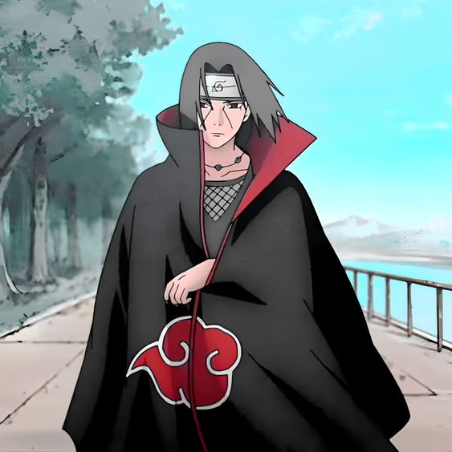
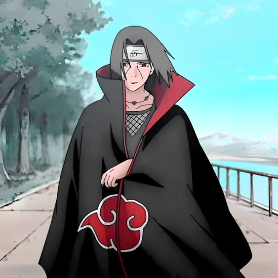

Arcos e Curiosidades
Arco - País das Ondas Naruto recebe sua primeira missão fora da aldeia da folha, uma
missão de rank D, um construtor de ponte chamado Tazuna, contrata a
aldeia da folha para escolta-lo até o seu páis natal e pede para que os ninjas levem ele
para sua vila, porém durante o caminho para sua vila,a equipe 7 é atacada por alguns
capangas, mas kakashi detém todos.
Arco - Exame Chunnin
Naruto recebe sua primeira missão fora da aldeia da folha, uma
missão de rank D, um construtor de ponte chamado Tazuna, contrata a
aldeia da folha para escolta-lo até o seu páis natal e pede para que os ninjas levem ele
para sua vila, porém durante o caminho para sua vila,a equipe 7 é atacada por alguns
capangas, mas kakashi detém todos.
Arco - Exame Chunnin
 Sendo um dos arcos mais marcantes da obra de naruto,o arco do exame chunin em Naruto uma
história emocionante. Ao fornecer mais profundidade à trama, novos personagens são
introduzidos
para desempenhar um papel importante no desenvolvimento da história. O arco do exame Chunin
apresenta
vários desses personagens,conflitos futuros entre as Vilas Ocultas da Folha e da Areia.
Arco - Resgate ao sasuke
Sendo um dos arcos mais marcantes da obra de naruto,o arco do exame chunin em Naruto uma
história emocionante. Ao fornecer mais profundidade à trama, novos personagens são
introduzidos
para desempenhar um papel importante no desenvolvimento da história. O arco do exame Chunin
apresenta
vários desses personagens,conflitos futuros entre as Vilas Ocultas da Folha e da Areia.
Arco - Resgate ao sasuke
 O resgate de Sasuke, após o uchiha deixar a aldeia em busca de vingança e sede de poder. O
Time
de Resgate de Sasuke foi uma equipe de resposta a emergência formada por causa da deserção
de Sasuke Uchiha de Konohagakure
para Otogakure. Por causa da natureza rank A da missão, a equipe de resgate normalmente
teria sido composta por chūnin e jōnin, no
entanto, como Konoha ainda estava sofrendo de uma perda de mão de obra, devido à tentativa
de invasão,a Quinta Hokage só foi capaz
de enviar forças mínimas.
Hogakes
A posição de Hokage surgiu logo após a criação da Vila da Folha graças a Hashirama Senju, um
de seus fundadores. Normalmente, o Hokage escolhe seu sucessor. Caso ele morra ou não possa
fazer isso, o novo
ocupante é escolhido pelo daimyo da Terra do Fogo (país em que está a Vila da Folha), que
considera os conselhos dados pelo Conselho da Vila, o Comandante Jonin e um representante da
Anbu.
O resgate de Sasuke, após o uchiha deixar a aldeia em busca de vingança e sede de poder. O
Time
de Resgate de Sasuke foi uma equipe de resposta a emergência formada por causa da deserção
de Sasuke Uchiha de Konohagakure
para Otogakure. Por causa da natureza rank A da missão, a equipe de resgate normalmente
teria sido composta por chūnin e jōnin, no
entanto, como Konoha ainda estava sofrendo de uma perda de mão de obra, devido à tentativa
de invasão,a Quinta Hokage só foi capaz
de enviar forças mínimas.
Hogakes
A posição de Hokage surgiu logo após a criação da Vila da Folha graças a Hashirama Senju, um
de seus fundadores. Normalmente, o Hokage escolhe seu sucessor. Caso ele morra ou não possa
fazer isso, o novo
ocupante é escolhido pelo daimyo da Terra do Fogo (país em que está a Vila da Folha), que
considera os conselhos dados pelo Conselho da Vila, o Comandante Jonin e um representante da
Anbu.
Hogakes da aldeia da folha
⚫ Hashirama Senju⚫ Tobirama Senju
⚫ Hiruzen Saratobi
⚫ Minato Namikaze
⚫ Tsunade Senju
Naruto X Sasuke
 A rivalidade de Naruto e Sasuke é fascinante em como reflete os temas da narrativa. Ambos os
personagens são regularmente submetidos à dor e ao ódio que existe no mundo e percebem como
isso se perpetuou ao longo da história. Uma grande parte de suas histórias individuais é
aprender a lidar com esse ódio.Claro, devido às suas diferentes experiências, Naruto e
Sasuke
chegam a conclusões muito
diferentes sobre como lidar com o ódio.
Akatsuki
A rivalidade de Naruto e Sasuke é fascinante em como reflete os temas da narrativa. Ambos os
personagens são regularmente submetidos à dor e ao ódio que existe no mundo e percebem como
isso se perpetuou ao longo da história. Uma grande parte de suas histórias individuais é
aprender a lidar com esse ódio.Claro, devido às suas diferentes experiências, Naruto e
Sasuke
chegam a conclusões muito
diferentes sobre como lidar com o ódio.
Akatsuki
 Uma das organizações antagonistas do anime, a Akatsuki é introduzida durante o arco de
invasão
de konoha, Itachi Uchiha e Kisame Hodhigaki vão a konoha, capturar naruto para extrair a
raposa de nove caudas do seu corpo,
porém Sasuke acaba reencontrando seu irmão que assasinou todo seu clã e decidi se vingar,
neste embate Itachi demonstra sua superioridade e derruba Sasuke facilmente, porém Jiraya
acaba chegando a tempo e tenta imobilizar e capturar Itachi e Kisame para obter mais
informações da
organização que está atrás das bijuss de cauda,
ao fim da luta entre Sasuke e Naruto no vale do fim o anime apresenta Zetsu Negro.
Uma das organizações antagonistas do anime, a Akatsuki é introduzida durante o arco de
invasão
de konoha, Itachi Uchiha e Kisame Hodhigaki vão a konoha, capturar naruto para extrair a
raposa de nove caudas do seu corpo,
porém Sasuke acaba reencontrando seu irmão que assasinou todo seu clã e decidi se vingar,
neste embate Itachi demonstra sua superioridade e derruba Sasuke facilmente, porém Jiraya
acaba chegando a tempo e tenta imobilizar e capturar Itachi e Kisame para obter mais
informações da
organização que está atrás das bijuss de cauda,
ao fim da luta entre Sasuke e Naruto no vale do fim o anime apresenta Zetsu Negro.Membros Akatsuki
 ⚫ Nagato
⚫ Nagato⚫Konan
⚫ Itachi Uchiha
⚫Tobi
⚫ Zetsu
⚫Deidara
⚫ Sasori
⚫ Orochimaru
⚫Hidan
⚫Kakuzu
⚫ Kisame Hoshigaki
Quarteto do som O Quarteto do Som Shinobis Ocultos do Som foram os guarda-costas de elite de Orochimaru. Embora tecnicamente fossem cinco, Sakon e Ukon contavam como uma única entidade por causa de sua kekkei Genkai,Apesar da sua tenra idade, todos os membros do Quarteto do Som estavam entre os ninjas mais fortes de Orochimaru e tornaram-se seus guarda-costas pessoais. No anime, eles receberam os cargos de guarda-costas de Orochimaru depois de sobreviverem a uma briga entre a vida e a morte com outros sujeitos experimentais capturados por Orochimaru
Membros Quarteto do som
⚫ Kimimaro Kaguya⚫ Tayuyau
⚫ Kidomaru
⚫ Jirobo
⚫ Sakon e Ukon
Personagens do anime
Naruto Uzumaki Naruto teve aprisionado em seu corpo a Raposa de nove caudas, pelo Quarto Hokage, com finalidade de salvar a Aldeia. Naruto não conseguia fazer amizades, devido ao espírito da raposa de nove caudas, a aldeia toda se afastou de naruto, muito por conta da destruição que a bijuu causou na aldeia, matando familiares dos ninjas da folha, destruindo konoha e por ter matado o quarto hogake. Sasuke Uchiha Sasuke além de ser o último sobrevivente do clã uchiha em Konoha quando a série começa. Após
o trágico massacre de sua família quando ele era uma criança
pequena, o garoto se tornou frio e distante, tendo como seu único objetivo vingança contra
aquele que matou todo o seu clã. Em Naruto, ele se forma na Academia como o melhor aluno de
sua
classe, sendo colocado no Time 7 ao lado de Naruto e Sakura, sob a liderança do sensei
Kakashi
Kakashi Hatake
Sasuke além de ser o último sobrevivente do clã uchiha em Konoha quando a série começa. Após
o trágico massacre de sua família quando ele era uma criança
pequena, o garoto se tornou frio e distante, tendo como seu único objetivo vingança contra
aquele que matou todo o seu clã. Em Naruto, ele se forma na Academia como o melhor aluno de
sua
classe, sendo colocado no Time 7 ao lado de Naruto e Sakura, sob a liderança do sensei
Kakashi
Kakashi Hatake
 Kakashi Hatake é conhecido por sua incrível competência como ninja, se tornando genin aos 5
anos, jounin apenas com 12 anos durante a 3º Guerra Ninja e entrando para o Esquadrão
Especial da ANBU
ainda aos 13 anos, se tornando a pessoa mais jovem a se tornar capitão da ANBU.
Itachi Uchiha

Itachi nasceu em um dos maiores e mais prestigiados clãs de Konoha, entrou para o grupo de
caçadores especiais Anbu, se tornando líder deles com apenas 13
anos de idade. Além de ser um prodígio do clã Uchiha da Aldeia da folha. Ele se tornou um
criminoso internacional depois de assassinar seu clã inteiro, poupando apenas a vida
de seu irmão mais novo, Sasuke.
Neji Hyuga
Kakashi Hatake é conhecido por sua incrível competência como ninja, se tornando genin aos 5
anos, jounin apenas com 12 anos durante a 3º Guerra Ninja e entrando para o Esquadrão
Especial da ANBU
ainda aos 13 anos, se tornando a pessoa mais jovem a se tornar capitão da ANBU.
Itachi Uchiha

Itachi nasceu em um dos maiores e mais prestigiados clãs de Konoha, entrou para o grupo de
caçadores especiais Anbu, se tornando líder deles com apenas 13
anos de idade. Além de ser um prodígio do clã Uchiha da Aldeia da folha. Ele se tornou um
criminoso internacional depois de assassinar seu clã inteiro, poupando apenas a vida
de seu irmão mais novo, Sasuke.
Neji Hyuga
 Neji Hyūga é um membro do clã Hyūga e um shinobi da vila da folha. Embora
tenha sido um prodígio mesmo pelos padrões dos Hyūga, Neji era um membro da casa secundária,
por
isso, não importa quão habilidoso se torna-se, ele estaria sempre a serviço da casa
principal
Hyūga, um fato que convenceu-o de que o destino era predeterminado, foi após a morte do seu
pai, onde ele se tornou frio e narcisista
Jiraya Sábio do sapo
Neji Hyūga é um membro do clã Hyūga e um shinobi da vila da folha. Embora
tenha sido um prodígio mesmo pelos padrões dos Hyūga, Neji era um membro da casa secundária,
por
isso, não importa quão habilidoso se torna-se, ele estaria sempre a serviço da casa
principal
Hyūga, um fato que convenceu-o de que o destino era predeterminado, foi após a morte do seu
pai, onde ele se tornou frio e narcisista
Jiraya Sábio do sapo
 JIraya ficou conhecido justamente por ter sido treinado pelo ninja que se tornou o terceiro
Hokage e aprendido com eles técnicas avançadas, se tornou um sannin, título dado para
ninjasque são considerados lendários. Após se tornar adulto,acabou virando mestre do quarto
Hokage, após isso Jiraiya acabou se tornando o
grande mestre de Naruto e lhe ensinou diversas
técnicas importantes, sendo o Rasengan a mais importante delas.
Orochimaru
Principal vilão da série clássica de naruto, Orochimaru tentou destruir a Aldeia da folha,
durante a luta entre Orochimaru e o Terceiro Hokage, ele reviveu o Primeiro Hokage e Segundo
Hokage, Porém, o Terceiro Hokage acabou
usando o hiki Fujin(Selo ceifeiro da morte) como último recurso para eliminar de uma vez por
todas o mal que Orochimaru representava. Ao sacrificar sua própria alma, ele foi capaz de
destruir os corpos do Primeiro e Segundo Hokage, e fazer com que Orochimaru perdesse o
movimento dos braços
Gaara do deserto
Gaara é o terceiro e mais novo filho do Quarto Kazekage Rasa e sua esposa Karura, sendo o
irmão
mais novo de Temari e Kankuro. Logo em seu nascimento, seu pai faz com que Chiyo selasse o
Shukaku
dentro de seu próprio filho, tendo a intenção de usá-lo como uma arma de sua vila no futuro,
como naruto gaara támbem quando pequeno acabava machucando moradores da vila, mesmo sem
intenção.
JIraya ficou conhecido justamente por ter sido treinado pelo ninja que se tornou o terceiro
Hokage e aprendido com eles técnicas avançadas, se tornou um sannin, título dado para
ninjasque são considerados lendários. Após se tornar adulto,acabou virando mestre do quarto
Hokage, após isso Jiraiya acabou se tornando o
grande mestre de Naruto e lhe ensinou diversas
técnicas importantes, sendo o Rasengan a mais importante delas.
Orochimaru
Principal vilão da série clássica de naruto, Orochimaru tentou destruir a Aldeia da folha,
durante a luta entre Orochimaru e o Terceiro Hokage, ele reviveu o Primeiro Hokage e Segundo
Hokage, Porém, o Terceiro Hokage acabou
usando o hiki Fujin(Selo ceifeiro da morte) como último recurso para eliminar de uma vez por
todas o mal que Orochimaru representava. Ao sacrificar sua própria alma, ele foi capaz de
destruir os corpos do Primeiro e Segundo Hokage, e fazer com que Orochimaru perdesse o
movimento dos braços
Gaara do deserto
Gaara é o terceiro e mais novo filho do Quarto Kazekage Rasa e sua esposa Karura, sendo o
irmão
mais novo de Temari e Kankuro. Logo em seu nascimento, seu pai faz com que Chiyo selasse o
Shukaku
dentro de seu próprio filho, tendo a intenção de usá-lo como uma arma de sua vila no futuro,
como naruto gaara támbem quando pequeno acabava machucando moradores da vila, mesmo sem
intenção.